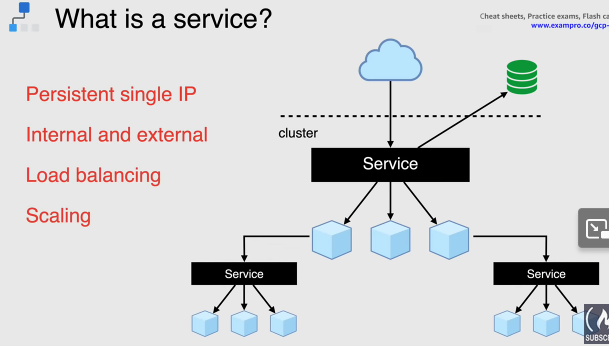

What is a Headless Service?
When there is no need of load balancing or single-service IP addresses.We create a headless service which is used for creating a service grouping. That does not allocate an IP address or forward traffic.So you can do this by explicitly setting ClusterIP to “None” in the mainfest file, which means no cluster IP is allocated.
For example, if you host MongoDB on a single pod. And you need a service definition on top of it for taking care of the pod restart.And also for acquiring a new IP address. But you don’t want any load balancing or routing. You just need the service to patch the request to the back-end pod. So then you use Headless Service since it does not have an IP.
Kubernetes allows clients to discover pod IPs through DNS lookups. Usually, when you perform a DNS lookup for a service, the DNS server returns a single IP which is the service’s cluster IP. But if you don’t need the cluster IP for your service, you can set ClusterIP to None , then the DNS server will return the individual pod IPs instead of the service IP.Then client can connect to any of them.